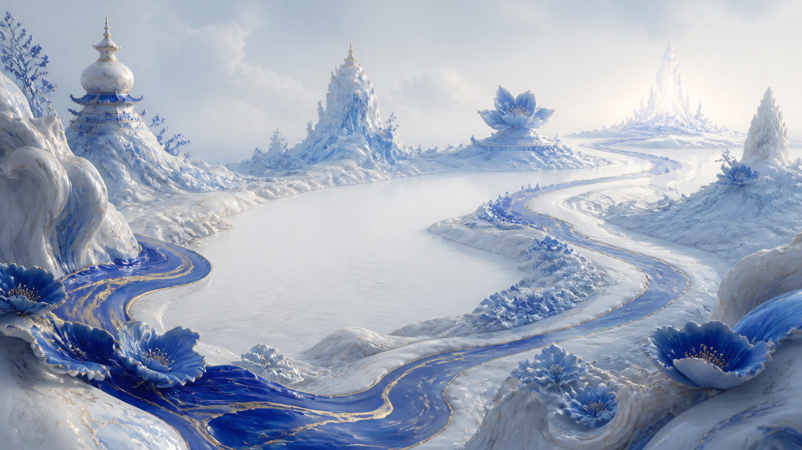
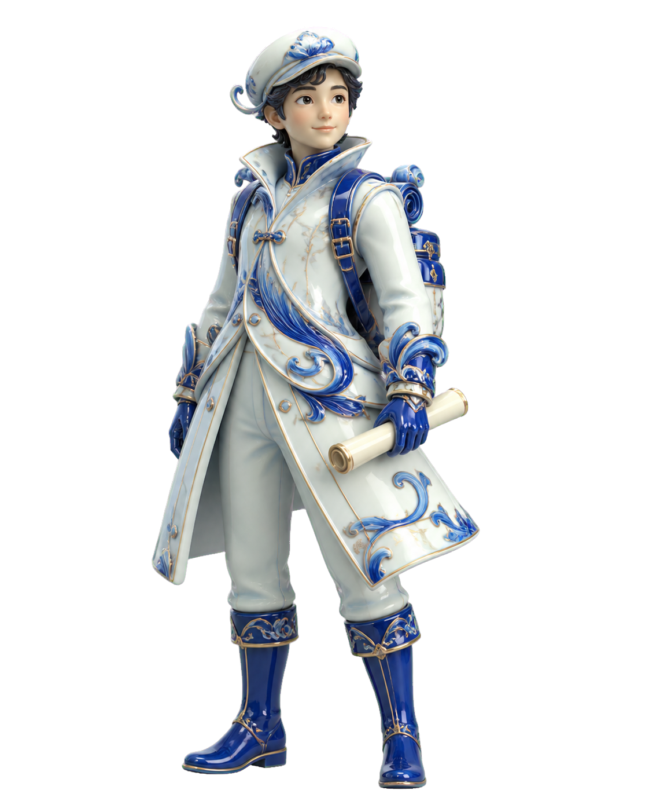

Экспедиция в прошлое · 9 класс
Собери
карту мира
Путь к Точке памяти исчез с карты. Пройди пять участков маршрута, восстанови правила обособления и верни миру утраченные связи.
30 испытаний5 навыковможно исправлять ошибки

